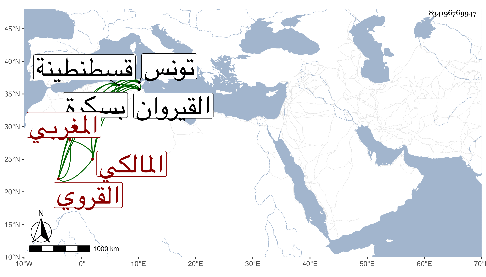

0902Sakhawi.DawLamic.ITO20230111-ara1.EIS1600.834196769947
Biography ID: 834196769947
29
عبد الله بن أحمد بن قاسم بن مناد النفزاوي القروي بلدا نسبة للقيروان المغربي المالكي . ولد سنة في حدود سنة خمس وثمانين وسبعمائة بالقيروان وقرأ بها القرآن لنافع على محمد بن أبي زيد صاحب قصر المنستير وفي الفقه على محمد ابن مسعود وعنه أخذ التصوف وصحيح مسلم والشفا على أبي عبد الله محمد الرماح وأبي القسم بن ناجي وكتاب البردعي والمورد العذب وكلاهما في الوعظ على حسن الحلقاوي والأذكار على محمد بن عبد الله الشيبي في مزار الشيخ عبد الله ابن أبي زيد ، وشغف بالتصوف وأهله فأخذ عن أبي زيد عبد الرحمن البنا وسالم المرو وغيرهما ، وحج مرارا من سنة تسع وعشرين إلى سنة ست وأربعين ولقيه البقاعي فيها وقال إنه كان شيخا جسنا يلوح عليه الخير وسلامة الفطرة غير أنه متوغل في أمور الصوفية منهمك في عشرتهم قد اختلطت كلماتهم وأفعالهم بلحمه ودمه سريع النظم مع لحنه وربما يقع له الوسط وعنده فضيلة ، ودخل تونس وأخذ عنه أصحابه قصيدته الصفوة شرح القهوة وأولها :
| أيا ساقي لنا صفوا | أدرها لي بغير مزاج |
وكذا دخل قسنطينة وبسكرة وصنف انجاد الأنجاد في فضل الجهاد ونظم قصيدة وعظية في الأهوال الأخروية أولها :
| بحمد الله أبتدئ المسائل | وحمد الله عون لكل قائل |
وأخرى تسمى أنوار الفكر في أسرار الذكر أولها :
| إذا أردت بعون الله تتزر | دوام نصحتك ذكر الله تنتصر |
مات قريب الخمسين .
